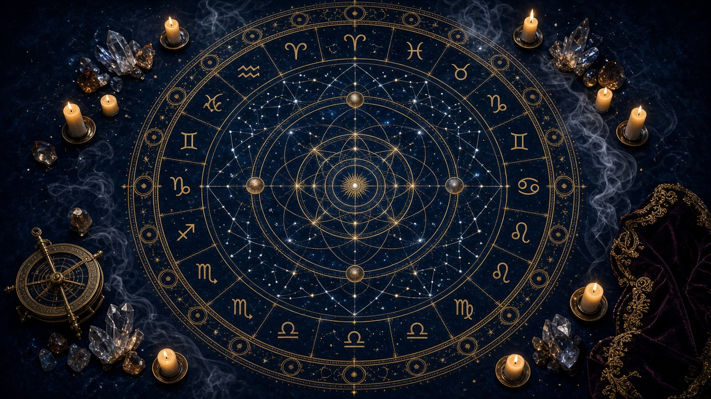
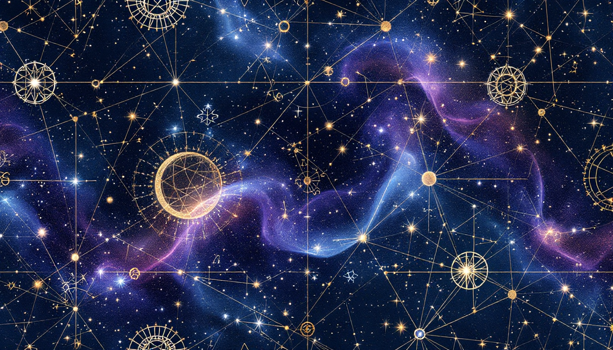
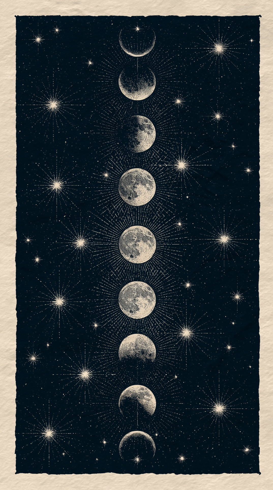
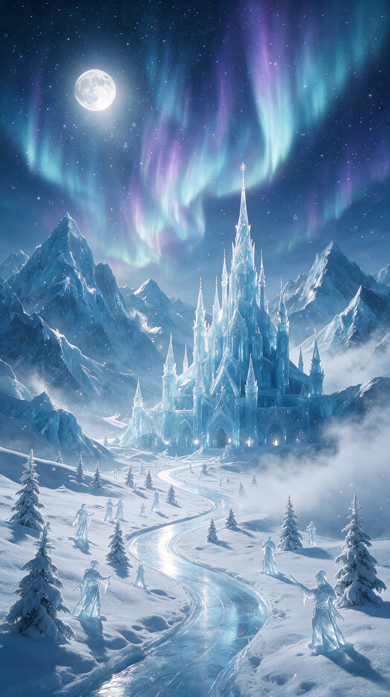
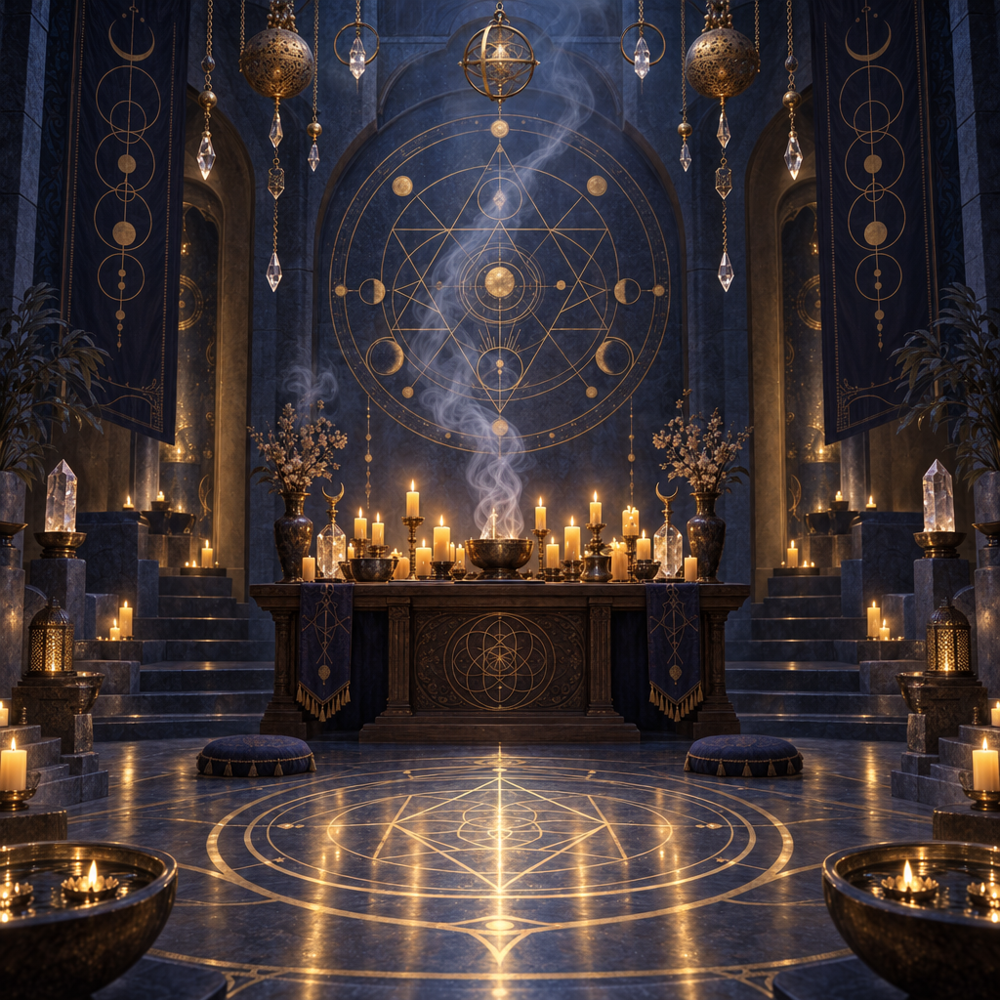
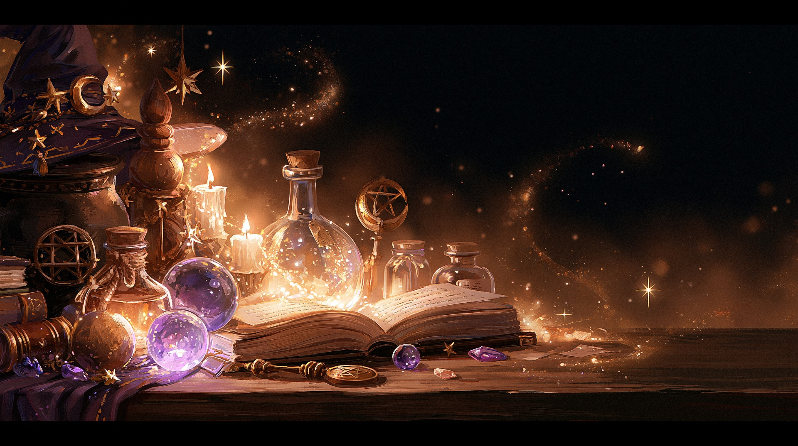
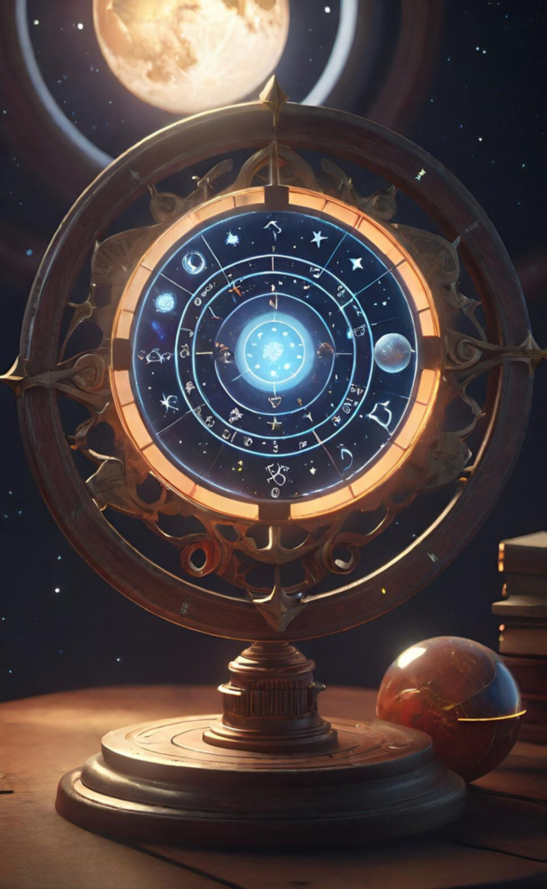

✧ Гримуар Луны ✧
Книга древних символов, небесных циклов, исторических традиций и личных открытий.
☼ Ежедневный гороскоп
Выбери свой знак зодиака, чтобы открыть прогноз на выбранный день недели.
Твой прогноз
Выбери знак зодиака.
✧ Тайное послание дня
Открой страницы гримуара
☉ Галерея зодиаков
Двенадцать знаков и подробная энциклопедия их символики.
☾ Лунный календарь
Фазы Луны и календарная справка.
❖ Древняя астрология
История небесных традиций разных народов.
♧ Амулеты и обереги
Предметы, символы и защитные традиции.
Галерея зодиаков
Энциклопедия двенадцати знаков зодиака: характер, темперамент, эмоции, отношения, дружба, способности, мифология и совместимость.
Выбери знак зодиака
Нажми на карточку, чтобы прочитать подробную характеристику.
Лунный календарь
Наблюдение за лунным циклом и его основными фазами.

☾ Луна
Фаза Луны
Календарная дата
Основные фазы
● Новолуние
Луна находится примерно между Землёй и Солнцем, её освещённая сторона почти не видна с Земли.
◐ Первая четверть
Видна примерно половина освещённого диска Луны.
○ Полнолуние
Освещённая сторона обращена к Земле.
◑ Последняя четверть
Освещённая видимая часть снова уменьшается.
Древняя астрология и небесные традиции
От Вавилона и Египта до народов Восточной Европы, Поволжья, Урала, Сибири и Кавказа. История того, как люди наблюдали за небом, измеряли время и представляли устройство мира.

Выбери историческую традицию, чтобы открыть подробную главу.
Источники для дальнейшего изучения
- British Museum — археологические коллекции и материалы по истории древних культур.
- The Metropolitan Museum of Art — египетские, ближневосточные и античные предметы.
- UCL Digital Egypt — материалы по истории и культуре Древнего Египта.
- Babylonian Collection — материалы для изучения клинописной традиции.
Амулеты и обереги
Историческая коллекция защитных предметов, украшений, печатей и символов разных культур.

Выбери предмет из коллекции.
Тайное послание
Здесь можно посмотреть сегодняшнее послание и историю ранее показанных текстов.

История посланий
Послания — символические тексты для размышления и вдохновения, а не предсказания будущего.
Архив гороскопов
Выбери дату недели и знак, чтобы прочитать прогноз. На главной странице всегда отображается текущий день.

Твой прогноз
Выбери знак.